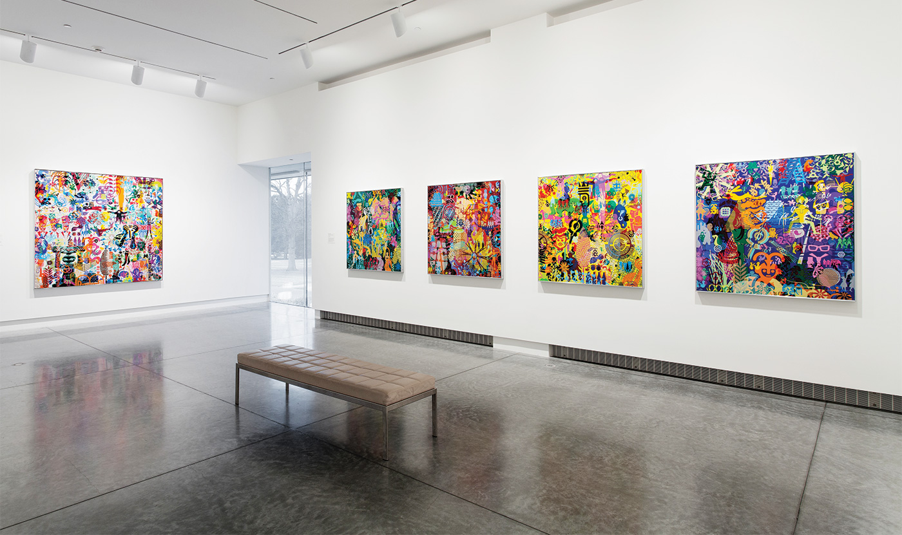

RYAN McGINNESS
Ryan McGinness is a New York-based visual artist whose large scale paintings draw heavy
influence from the surf and skate culture of his hometown of Virginia Beach, Virginia. Known for his
intricately layered pieces, McGinness weaves together the visual language
of contemporary iconography, corporate logos, and public signage, creating abstract pieces that have established him as one of the most popular artists of his generation.
of contemporary iconography, corporate logos, and public signage, creating abstract pieces that have established him as one of the most popular artists of his generation.
The Virginia Museum of Fine Arts in Richmond, VA first teamed up with
McGinness for their official reopening in May of 2010, commissioning
the artist to create a monumental and site-specific installation piece.
Entitled Art History Is Not Linear (VMFA), and inspired by pieces from
the museum’s archives, McGinness’ work is on permanent display in
the museum. Now, four years later, McGinness returns to the VMFA for
RyanMcGinness: Studio Visit, an exhibit that presents a unique view of
thecreative process behind this massivecommissioned work. Partnering
with the VMFA, we stepped inside his studio to talk to the artist about
theevolution of his work.
See more of Ryan’s work at ryanmcginness.com
Special thanks to the Virginia Museum of Fine Arts vmfa.museum